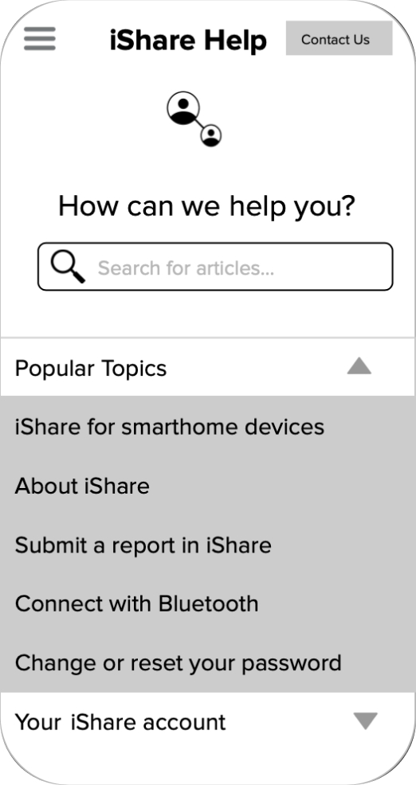
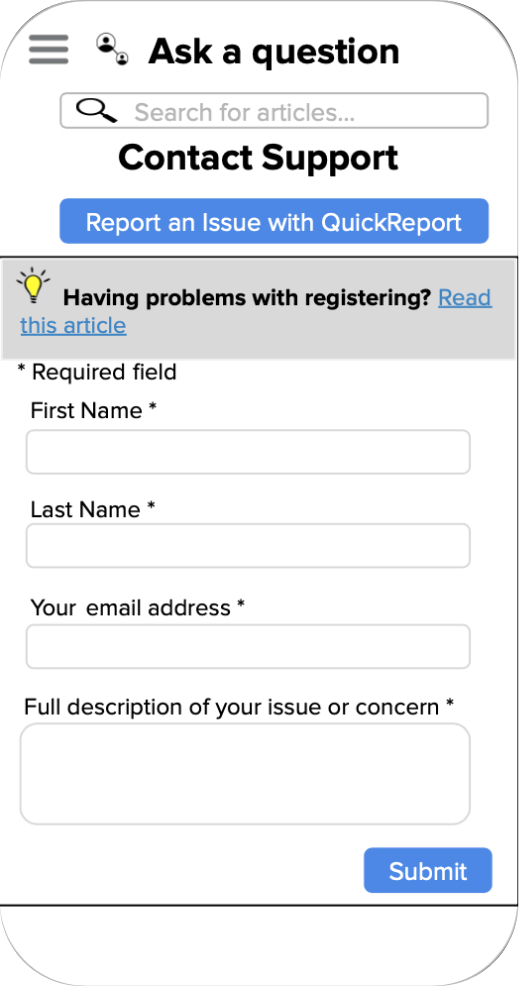
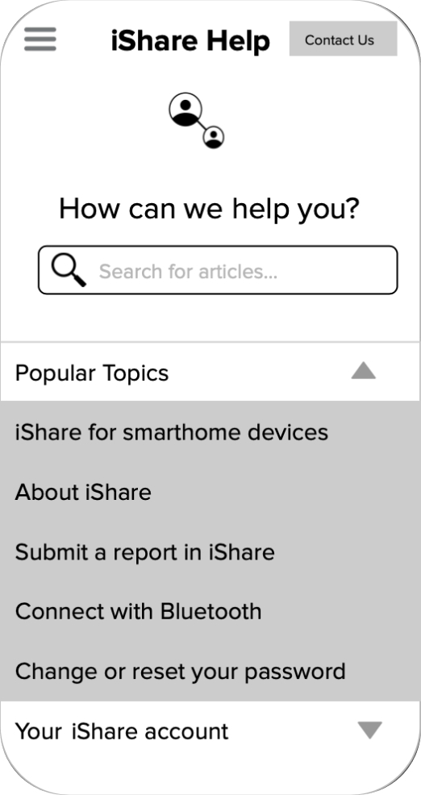
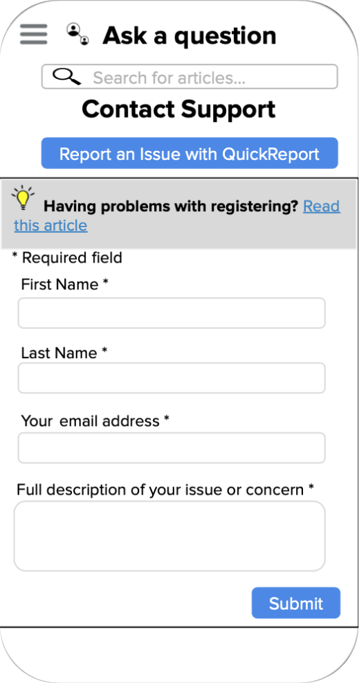

Project Background
As part of my Human Centered Design course, we were tasked with completing a semester-long project.
One common feature for many of these devices is the ability to share them with other people. There are several types of people you might want to share with: other people living in the home; visitors who are occasionally in the home; and people who may want to control some of these devices while not at home.
Most apps have some form of sharing interfaces, but many of these are overly simplistic, and do not allow for the range of potential sharing users and use cases.
So, we crafted iShare, a simple and intuitive smart home sharing app designed to improve the lives of everyday people, like ourselves, and provide them with a much needed extra layer of security.
Project Details
Timeline
September 2019 - December 2019
Team
Quin C, Daniel D, Andrew D, and Kyle B
Skills
User Research, User Experience Design
Tools
Google Suite (Slides, Forms, Docs), Figma
Goal
Design an application to share a particular smart home device, or multiple related smart home devices, with other people. This is the interface for the device owner to set up who they want to share with and how.
Our high level goals were:
- Make it efficient and easy to use for everyone, everywhere.
- Provide device owners with control over their smart home system.
- Consolidate smart home devices into a single interface.
User Interview & Survey
We conducted one semi-formal interview and crafted a survey where we gathered responses from 21 smart home device users.
Personas
From our findings we crafted our personas to reflect the common attributes, pain points, and goals of our target audience.
Ideation and Low-fidelity Sketches
The general theme of our application was simple and intuitive. We wanted to ensure users weren’t overwhelmed by multiple features and chose to focus on making their experience as learnable and predictable to create a sense of comfort when navigating throughout the app.
We took inspiration from various other smart home apps such as Ring, Nest, and Apple Home and crafted a brief outline of certain essential features for our app. At this stage, crafting iShare's overall user flow was pivotal in our creation of a low-fidelity prototype for user testing.
Low-Medium Fidelity Prototype
Before we could conduct user testing, we created a medium fidelity interactive prototype in Google Slides. This enabled us to guide users through iShare’s flow and gather data and feedback from them.
 



Usability Testing and Findings
Objectives
- Determine the length of time and number of clicks it takes participants to complete a given task within the app.
- Discover potential pain points participants may encounter.
- Gather feedback to further improve the overall user experience.
- Participants: 5
- Testing Method: Moderated in-person
Users were asked to complete 8 tasks as followed:
- Turn the temperature up and down in their home
- Open their iShare camera to get a wider view of the front door
- Navigate to the Support page
- Contact iShare’s customer service
- Deactivate the Ring motion sensor
- Share their device with one user
- Unshare their device from one user

Revised Medium-Fidelity Prototype
After user testing, we went back to the drawing board to craft a medium-fidelity prototype to address the pain points and feedback we received.
iShare’s main user tasks involved sharing access to smart home devices with other users and interacting with more than one device. As a result of this, we wanted the user to be able to accomplish these tasks in a centralized location; the home screen.
Being that a major pain point for users was centered around finding these specific functions, we made it our main focus in this iteration. We wanted the visual design to be modern and simplistic to truly embody iShare’s moto of creating a simple and intuitive space for users to interact with and explore.
Reflection
iShare was the first project we worked on that involved conceptualizing an app from scratch. Given we collectively learned about the UX design process alongside completing this project, it was a great test of knowledge and dedication to creating a data-driven and impactful user experience.
Prior to this, we often failed to think of the underlying processes that this process entails, and through this project we learned more about the importance of techniques such as wizard of oz, needfinding, and more, and how they are essential aspects of designing great user experiences.
We thoroughly enjoyed being a part of this process and all hope to continue growing in our knowledge of the UX Design process. Thanks for sticking around! 😁